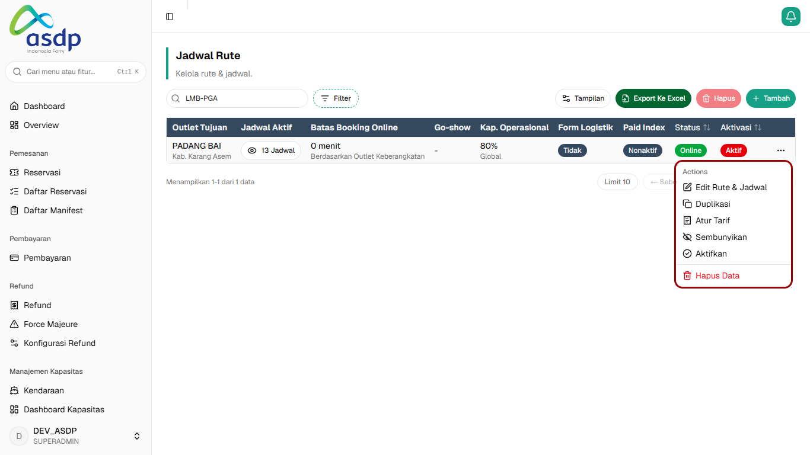
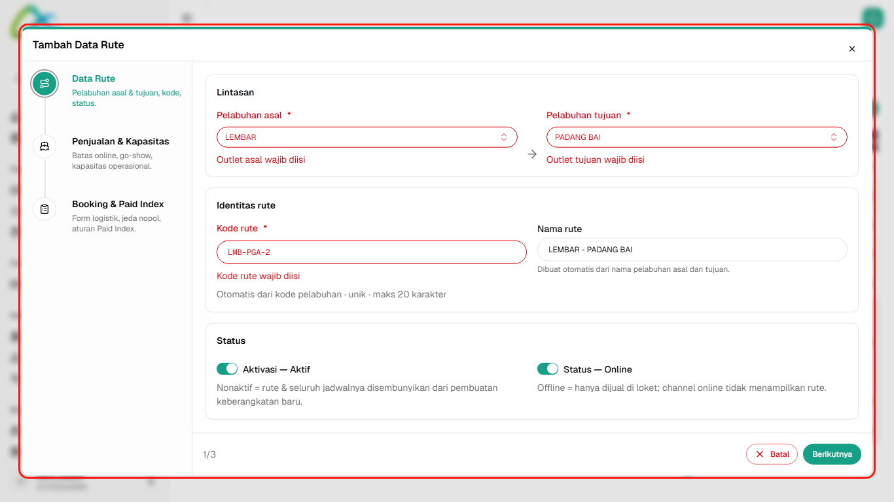
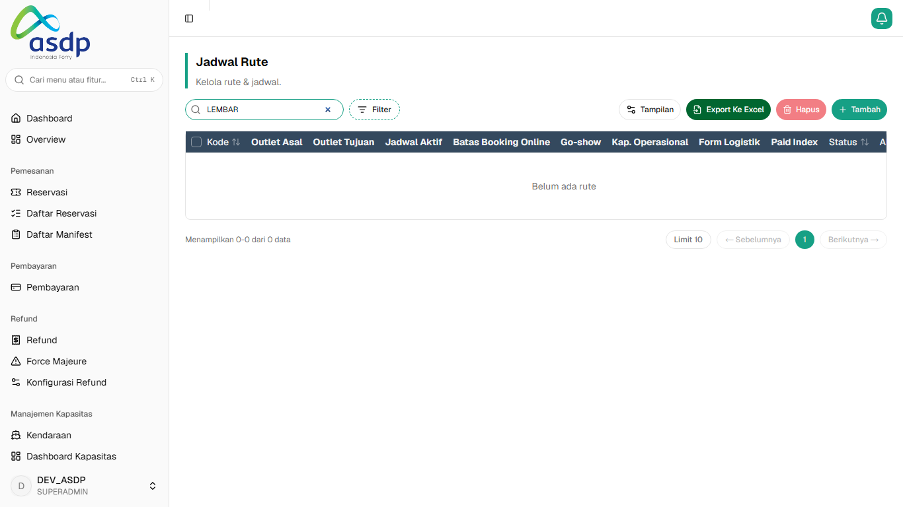

Laporan test
13-11-2026 13:57 · 18 test
Cara membaca: laporan ini hanya menampilkan apa yang diperiksa test. Hijau tidak berarti tidak ada bug.
Test berjenis EKSPLORASI hanya mencetak isi balasan (0 test di run ini), jadi belum menilai sesuai atau tidak.
Masalah yang hanya terlihat di layar (tombol, tulisan, tata letak) tidak terdeteksi.
Temuan tercatat (diperkirakan bug)
TEMUAN Rute — form Tambah (tanpa menyimpan) > [Temuan] RJ-T01 menu rute yang AKTIF seharusnya "Nonaktifkan", bukan "Aktifkan"
UI\rute.spec.ts · PEMERIKSAAN
RJ-T01 — Rute aktif menampilkan menu "Aktifkan"; mengkliknya justru MENONAKTIFKAN rute dengan pesan "Rute berhasil diaktifkan"
Langkah:
1. Buka menu Jadwal Rute
2. Cari rute LMB-PGA (kolom Aktivasi: "Aktif")
3. Klik ⋯ (Buka menu) di baris itu
Ekspektasi: Rute yang Aktif menampilkan "Nonaktifkan" (dan dialog/toast "dinonaktifkan")
Aktual: Menu menampilkan "Aktifkan". Dari eksplorasi: dialog "Aktifkan Data? … akan diaktifkan kembali" → toast "Rute berhasil diaktifkan", tetapi rute menjadi Tidak Aktif

Bukti screenshot (klik untuk memperbesar) — file: hasil/bukti/RJ-T01_20261113-135718.png
Cetakan test
[TEMUAN] RJ-T01 — Rute aktif menampilkan menu "Aktifkan"; mengkliknya justru MENONAKTIFKAN rute dengan pesan "Rute berhasil diaktifkan"
Langkah:
1. Buka menu Jadwal Rute
2. Cari rute LMB-PGA (kolom Aktivasi: "Aktif")
3. Klik ⋯ (Buka menu) di baris itu
Ekspektasi: Rute yang Aktif menampilkan "Nonaktifkan" (dan dialog/toast "dinonaktifkan")
Aktual: Menu menampilkan "Aktifkan". Dari eksplorasi: dialog "Aktifkan Data? … akan diaktifkan kembali" → toast "Rute berhasil diaktifkan", tetapi rute menjadi Tidak Aktif
(bukti: hasil\bukti\RJ-T01_20261113-135718.png)
TEMUAN Rute — form Tambah (tanpa menyimpan) > [Temuan] RJ-T02 detail rute AKTIF seharusnya menampilkan "Aktifasi: Aktif"
UI\rute.spec.ts · PEMERIKSAAN
RJ-T02 — Status aktivasi di halaman detail rute berbeda dengan di daftar (selalu "Tidak Aktif")
Langkah:
1. Buka menu Jadwal Rute
2. Cari rute LMB-PGA, lihat kolom Aktivasi
3. Klik ⋯ → Edit Rute & Jadwal, lihat bagian Informasi
Ekspektasi: "Aktifasi" di detail sama dengan daftar ("Aktif"); ejaan seharusnya "Aktivasi"
Aktual: Daftar: "Aktif", detail: "Aktifasi Tidak Aktif"

Bukti screenshot (klik untuk memperbesar) — file: hasil/bukti/RJ-T02_20261113-135722.png
Cetakan test
[TEMUAN] RJ-T02 — Status aktivasi di halaman detail rute berbeda dengan di daftar (selalu "Tidak Aktif")
Langkah:
1. Buka menu Jadwal Rute
2. Cari rute LMB-PGA, lihat kolom Aktivasi
3. Klik ⋯ → Edit Rute & Jadwal, lihat bagian Informasi
Ekspektasi: "Aktifasi" di detail sama dengan daftar ("Aktif"); ejaan seharusnya "Aktivasi"
Aktual: Daftar: "Aktif", detail: "Aktifasi Tidak Aktif"
(bukti: hasil\bukti\RJ-T02_20261113-135722.png)
TEMUAN Rute — form Tambah (tanpa menyimpan) > [Temuan] RJ-T03 pesan "wajib diisi" seharusnya hilang setelah kolomnya diisi
UI\rute.spec.ts · PEMERIKSAAN
RJ-T03 — Pesan "wajib diisi" tetap tampil walau kolomnya sudah terisi
Langkah:
1. Buka menu Jadwal Rute (/routes)
2. Klik "Tambah"
3. Klik Berikutnya dengan form kosong (muncul 3 pesan wajib)
4. Pilih Pelabuhan asal LEMBAR dan tujuan PADANG BAI (kode rute terisi otomatis)
Ekspektasi: Pesan wajib pada kolom yang sudah diisi langsung hilang
Aktual: Masih tampil: "Outlet asal wajib diisi", "Outlet tujuan wajib diisi", "Kode rute wajib diisi"

Bukti screenshot (klik untuk memperbesar) — file: hasil/bukti/RJ-T03_20261113-135728.png
Cetakan test
[TEMUAN] RJ-T03 — Pesan "wajib diisi" tetap tampil walau kolomnya sudah terisi
Langkah:
1. Buka menu Jadwal Rute (/routes)
2. Klik "Tambah"
3. Klik Berikutnya dengan form kosong (muncul 3 pesan wajib)
4. Pilih Pelabuhan asal LEMBAR dan tujuan PADANG BAI (kode rute terisi otomatis)
Ekspektasi: Pesan wajib pada kolom yang sudah diisi langsung hilang
Aktual: Masih tampil: "Outlet asal wajib diisi", "Outlet tujuan wajib diisi", "Kode rute wajib diisi"
(bukti: hasil\bukti\RJ-T03_20261113-135728.png)
TEMUAN Rute — form Tambah (tanpa menyimpan) > [Temuan] RJ-T04 pencarian rute seharusnya juga bisa dengan nama pelabuhan [perlu konfirmasi]
UI\rute.spec.ts · PEMERIKSAAN
RJ-T04 — Kotak "Cari data..." di Jadwal Rute hanya mencari kode rute, tidak nama pelabuhan
Langkah:
1. Buka menu Jadwal Rute
2. Ketik "LEMBAR" di kotak Cari data...
Ekspektasi: Rute yang asal/tujuannya LEMBAR (mis. LMB-PGA) tampil
Aktual: Hasil pencarian: 0 data ("Belum ada rute")

Bukti screenshot (klik untuk memperbesar) — file: hasil/bukti/RJ-T04_20261113-135733.png
Cetakan test
[TEMUAN] RJ-T04 — Kotak "Cari data..." di Jadwal Rute hanya mencari kode rute, tidak nama pelabuhan
Langkah:
1. Buka menu Jadwal Rute
2. Ketik "LEMBAR" di kotak Cari data...
Ekspektasi: Rute yang asal/tujuannya LEMBAR (mis. LMB-PGA) tampil
Aktual: Hasil pencarian: 0 data ("Belum ada rute")
(bukti: hasil\bukti\RJ-T04_20261113-135733.png)
Gagal (perlu dicek, belum tentu bug)
Tidak ada test yang gagal.
Gangguan koneksi (bukan bug fitur)
Tidak ada gangguan koneksi.
Hasil eksplorasi (isi cetakan, belum dinilai)
Tidak ada.
Semua test
| No | Berkas | Test | Jenis | Status | Detik |
|---|
| 1 | UI\rute.spec.ts | Rute — daftar > [Positif] RJ-01 halaman tampil: judul, toolbar, kolom tabel, ringkasan data |
PEMERIKSAAN | LULUS | 6.1 |
| 2 | UI\rute.spec.ts | Rute — daftar > [Positif] RJ-02 cari berdasarkan kode → hanya rute itu |
PEMERIKSAAN | LULUS | 2.5 |
| 3 | UI\rute.spec.ts | Rute — daftar > [Negatif] RJ-03 cari kode yang tidak ada → "Belum ada rute", 0 data |
PEMERIKSAAN | LULUS | 2.4 |
| 4 | UI\rute.spec.ts | Rute — daftar > [Positif] RJ-04 sort Kode: A→Z lalu Z→A |
PEMERIKSAAN | LULUS | 2.4 |
| 5 | UI\rute.spec.ts | Rute — daftar > [Positif] RJ-05 filter Aktivasi "Tidak Aktif" → semua baris Tidak Aktif |
PEMERIKSAAN | LULUS | 2.6 |
| 6 | UI\rute.spec.ts | Rute — daftar > [Positif] RJ-06 klik "n Jadwal" → daftar jadwal rute tampil, jumlah sesuai |
PEMERIKSAAN | LULUS | 2.3 |
| 7 | UI\rute.spec.ts | Rute — daftar > [Positif] RJ-07 Edit Rute & Jadwal → halaman detail berisi info rute & daftar jadwal |
PEMERIKSAAN | LULUS | 2.5 |
| 8 | UI\rute.spec.ts | Rute — form Tambah (tanpa menyimpan) > [Negatif] RJ-10 langkah 1 kosong → Berikutnya → 3 pesan wajib diisi |
PEMERIKSAAN | LULUS | 2.5 |
| 9 | UI\rute.spec.ts | Rute — form Tambah (tanpa menyimpan) > [Negatif] RJ-11 pelabuhan tujuan tidak boleh sama dengan asal (tidak ditawarkan) |
PEMERIKSAAN | LULUS | 4.2 |
| 10 | UI\rute.spec.ts | Rute — form Tambah (tanpa menyimpan) > [Positif] RJ-12 pilih asal & tujuan → kode & nama rute terisi otomatis |
PEMERIKSAAN | LULUS | 3.6 |
| 11 | UI\rute.spec.ts | Rute — form Tambah (tanpa menyimpan) > [Edge] RJ-13 pasangan pelabuhan yang sudah punya rute → kode otomatis tidak bentrok (diberi akhiran) |
PEMERIKSAAN | LULUS | 3.7 |
| 12 | UI\rute.spec.ts | Rute — form Tambah (tanpa menyimpan) > [Negatif] RJ-14 batas online & go-show negatif → ditolak di langkah 2 |
PEMERIKSAAN | LULUS | 4.4 |
| 13 | UI\rute.spec.ts | Rute — form Tambah (tanpa menyimpan) > [Negatif] RJ-15 kapasitas operasional 150% → ditolak "Isi persen 1 sampai 100" |
PEMERIKSAAN | LULUS | 4.6 |
| 14 | UI\rute.spec.ts | Rute — form Tambah (tanpa menyimpan) > [Positif] RJ-16 Batal menutup form tanpa menyimpan |
PEMERIKSAAN | LULUS | 4.2 |
| 15 | UI\rute.spec.ts | Rute — form Tambah (tanpa menyimpan) > [Temuan] RJ-T01 menu rute yang AKTIF seharusnya "Nonaktifkan", bukan "Aktifkan" |
PEMERIKSAAN | LULUS | 2.5 |
| 16 | UI\rute.spec.ts | Rute — form Tambah (tanpa menyimpan) > [Temuan] RJ-T02 detail rute AKTIF seharusnya menampilkan "Aktifasi: Aktif" |
PEMERIKSAAN | LULUS | 3.7 |
| 17 | UI\rute.spec.ts | Rute — form Tambah (tanpa menyimpan) > [Temuan] RJ-T03 pesan "wajib diisi" seharusnya hilang setelah kolomnya diisi |
PEMERIKSAAN | LULUS | 7.3 |
| 18 | UI\rute.spec.ts | Rute — form Tambah (tanpa menyimpan) > [Temuan] RJ-T04 pencarian rute seharusnya juga bisa dengan nama pelabuhan [perlu konfirmasi] |
PEMERIKSAAN | LULUS | 3.8 |